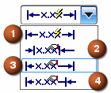

在注释首选项对话框的尺寸选项卡中的顶部，包含控制尺寸文本和箭头线放置的选项。

一共有四种放置方法：
自动放置：自动将尺寸标注放在尺寸延伸线之间，但如果延伸线之间的空间太小，文本将被放置到延伸线之外。
手工放置 — 箭头在外：可以根据需要将尺寸放置在您所选择的某个位置。尺寸标注箭头始终显示在延伸线以外。
手工放置 — 箭头在内：可以根据需要将尺寸放置在您所选择的某个位置。尺寸标注箭头始终显示在延伸线以内。这是默认的放置方法
手工放置 — 箭头方向相同：可以使用尺寸线箭头创建尺寸，对于线性尺寸和角度尺寸，尺寸线箭头都指向相同的方向。
箭头从第一个选定的对象指向第二个选定的对象。如果只选择一个对象，则箭头从最接近于选择的末端指向对象的另一端。